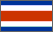
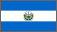
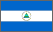
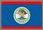
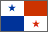
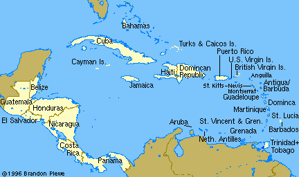

Indigenous signs for countries in Central America
  David Bar-Tzur
- Central America
- DH [A], PO > signer, FO > NDS, overlaps thumb with that of NDH [H dot], PO away, FO > diagonally up, with both hands moving forward slighty. The handshapes are different, but to get the general idea of the arrangement of the hands, see the QuickTime movie at NEEDS Outreach: North/South America.

Flags: World flag database.
Map: Virtual Tourist.
For a quick, interesting resource for facts about this and other countries,
try Mystic Planet - The New Age directory of Planet Earth.
Explanation of glossing system used
(to understand how I describe the signs in this dictionary)
- Belize (Belize)
- [Bb], PO away from signer, FO up, descends in a wavy pattern.1
- Costa Rica (Costa Rica)
- (1) NDH [B], PO down, FO > DS. DH [C], PO away from signer, travels > DS on NDH, passes over FTs, then descends while changing into [R].1 (2) C-R, but the PO of the first letter is > NDS. For a QuickTime movie of this sign, see NEEDS Outreach: Costa Rica.
- El Salvador (El Salvador)
- (1) (2h)[A], POs down, DHFO > NDS, brushes away from signer 2x with heel of palm on NDHFO > DS.1 (2) [E], PO > NDS, touches NDS upper chest, then changes to an [L] and touches DS hip. For a QuickTime movie of this sign, see NEEDS Outreach: El Salvador.
- Guatemala (Guatemala)
- (1) DH [G], PO > signer, FO > NDS, brushes away 2x with heel of palm on [A], PO down, FO > DS.1 (2) NDH [S], PO > DS, FO away, DH [3], PO > signer, FO > NDS. DH is placed on top of NDH.2
- Honduras (Honduras)
- (1) [H], PO > NDS, touches chin.1 (2) [V], FO down, moves down an inch or two on the DS of the body as if putting something into a side pocket.2
- Nicaragua (Nicaragua)
- DH [N], PO down, FO > NDS, brushes away from signer 2x with heel of palm on [A], PO down, FO >DS.1
- Panama (Panamá)
- (1) (2h)[H^ dot], POs ><, FOs away, fingers bend back > signer 2x.1 (< the Canal gates opening and closing.) (2) (2h)[B^], POs ><, FOs away, fingers bend back > signer 2x.1 For a QuickTime movie of this sign, see NEEDS Outreach: Panama. (< the Canal gates opening and closing.)
List of sources cited
 1. Signs around the world: Countries [Videotape]. Burtonsville, MD: Sign Media.
1. Signs around the world: Countries [Videotape]. Burtonsville, MD: Sign Media.
2. From a handout I was given that included indigenous signs I have seen in other reference works, so it seems properly researched.

Home